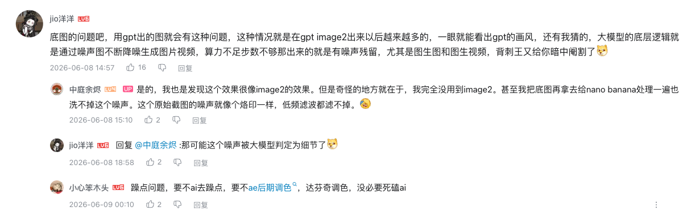
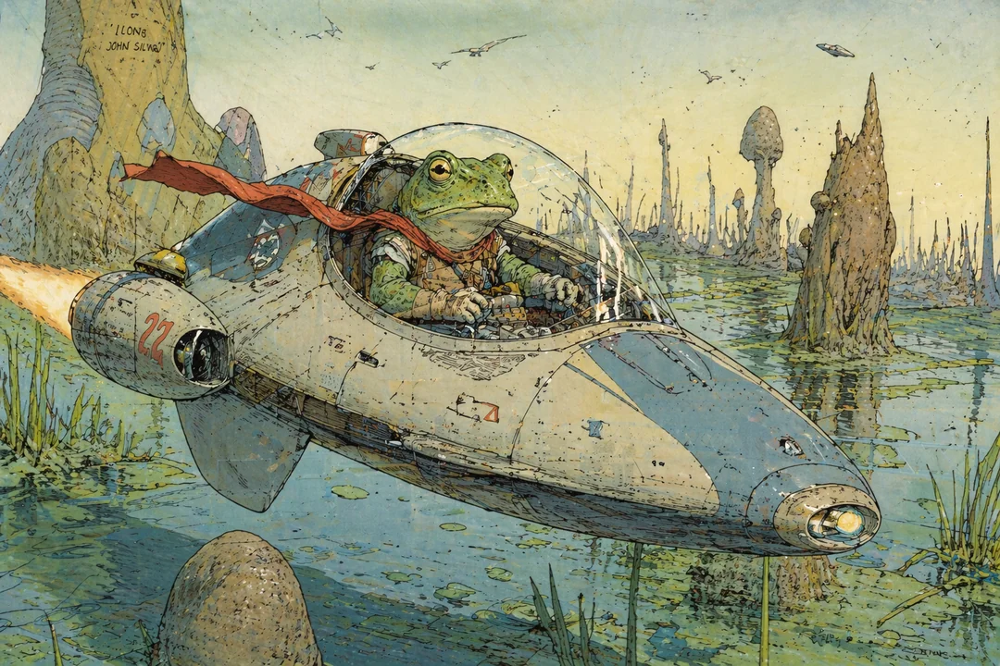

01 / DIAGNOSIS
先判断什么是“脏”
要删除的是不服务于结构、光影和材质的随机信息，而不是把所有纹理都抹平。

- 孤立、随机、不连接主要轮廓的小黑点与短线
- 不构成阴影、不属于材质的黑斑与扫描污渍
- 压缩噪点、错误纹理、涂抹感和不稳定边缘
- 保留真实磨损、笔触、阴影和有意义的材质细节
02 / STRUCTURE
方法一：先得到干净结构
根据画面选择线稿或白模。它们只负责结构，不负责最终风格。
转黑白线稿 Prompt
整体转为纯黑白线条稿，去除所有色彩、明暗渐变、阴影、纹理与实景质感，只保留清晰流畅的主要轮廓线。线条干净利落、无杂色，结构完整，精准还原原图造型轮廓，纯白背景，简约手绘线稿风格，无填充色块，高清、干净。
转中性白模 Prompt
Transform the uploaded image into a clean Blender-style untextured 3D model preview. Preserve the original subject, identity, proportions, silhouette, object relationships, composition, camera angle, perspective, depth, and scene layout exactly as shown. Change only the rendering method. Render the entire image as a smooth monochrome clay render or neutral viewport preview with soft studio lighting, clean geometry, controlled edge definition, and uniform neutral gray or off-white materials. No color information or texture maps. Do not turn it into line art, sketch, blueprint, wireframe, or illustration. Do not add outlines, hatch marks, invented wrinkles, grain, stains, material texture, topology lines, labels, UI, watermark, logo, subtitles, borders, QR codes, signatures, or extra text.
03 / REBUILD
方法二：结构参考 + 风格主参考
图一决定最终效果，图二只帮助恢复轮廓、体积和遮挡。建议使用 NanoBanana。



干净修复版 Prompt
基于两张参考图生成一张干净修复版图片：图一是最终效果的主参考，必须严格保留图一的画风、颜色、材质、光照、构图、视角、主体身份、物体位置、背景关系和整体氛围。图二只作为结构参考，用来辅助判断轮廓、体积、边缘、遮挡关系和局部形体准确性。 请自动清理图一中的脏点和噪声：凡是孤立存在、随机分布、不连接主要轮廓、不构成阴影、不属于材质纹理、不服务于结构描写的小黑点、小黑斑、短黑线、扫描污渍、压缩噪点和异常脏线，都去除。保留图一中有意义的线条、纹理、材质细节、磨损痕迹、阴影、笔触和原始风格特征。 最终结果应像图一的干净高清修复版，而不是重新设计。禁止采用图二的白模材质、3D 渲染感、摄影感、颜色、光影、景深或风格。不要新增元素、文字、Logo、水印、边框。保持图一画幅比例。
04 / BOUNDARY
去脏与 4K 修复不要混用
画面去脏
解决随机噪点、脏线、错误纹理、涂抹感和结构污染。必要时先抽取干净结构再重绘。
图片 4K 修复
解决整体模糊、局部错误、清晰度不足和高分辨率输出，使用现有六种方法页面。